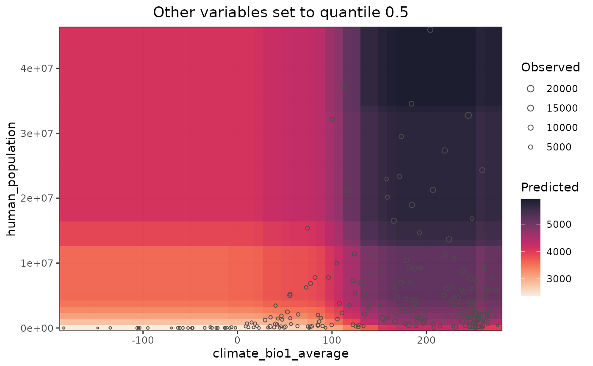

Plots the response surfaces of a random forest model
Source:R/plot_response_surface.R
plot_response_surface.RdPlots response surfaces for any given pair of predictors in a rf(), rf_repeat(), or rf_spatial() model.
Arguments
- model
A model fitted with
rf(),rf_repeat(), orrf_spatial(). DefaultNULL- a
Character string, name of a model predictor. If
NULL, the most important variable inmodelis selected. Default:NULL- b
Character string, name of a model predictor. If
NULL, the second most important variable inmodelis selected. Default:NULL- quantiles
Numeric vector between 0 and 1. Argument
probsof the function quantile. Quantiles to set the other variables to. Default:0.5- grid.resolution
Integer between 20 and 500. Resolution of the plotted surface Default:
100- point.size.range
Numeric vector of length 2 with the range of point sizes used by geom_point. Using
c(-1, -1)removes the points. Default:c(0.5, 2.5)- point.alpha
Numeric between 0 and 1, transparency of the points. Setting it to
0removes all points. Default:1.- fill.color
Character vector with hexadecimal codes (e.g. "#440154FF" "#21908CFF" "#FDE725FF"), or function generating a palette (e.g.
viridis::viridis(100)). Default:viridis::viridis(100, option = "F", direction = -1, alpha = 0.9)- point.color
Character vector with a color name (e.g. "red4"). Default:
gray30- verbose
Logical, if TRUE the plot is printed. Default:
TRUE
Details
All variables that are not a or b in a response curve are set to the values of their respective quantiles to plot the response surfaces. The output list can be plotted all at once with patchwork::wrap_plots(p) or cowplot::plot_grid(plotlist = p), or one by one by extracting each plot from the list.
Examples
data(plants_rf)
plot_response_surface(
model = plants_rf,
a = "climate_bio1_average",
b = "human_population",
grid.resolution = 50
)
